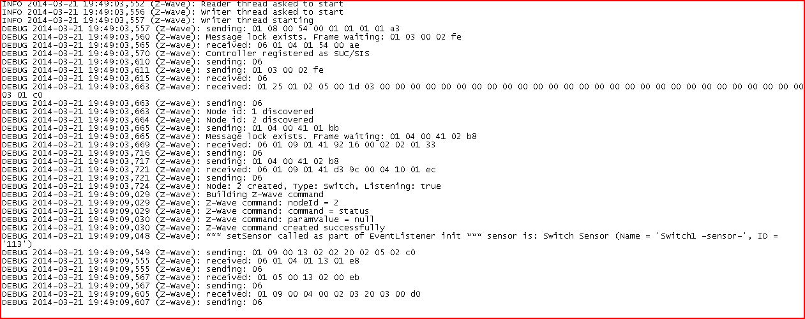
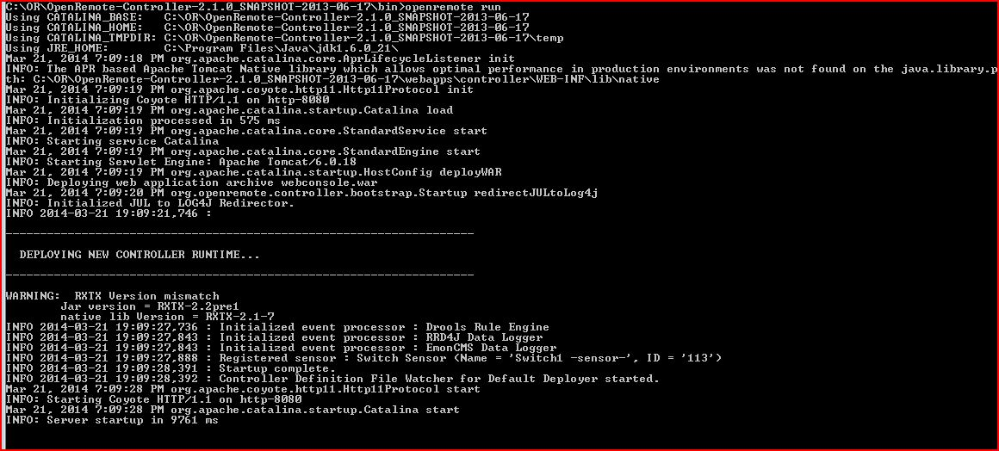

I am trying to use another USB DONGLE than the AEON LABS.
I have a ZWAVE.ME STICK.
I have done all configuration steps but I have got some errors:
Requested sensor id '3.671.603' was not found. Defaultin to 'N/A'
Error 0x5 at /home/bob/foo/rxtx-devel/build/../src/termios.c(860): Access denied.
Does anybody know if it is possible to use it with openremote?
{kind=link}
{kind=link}
|
At the bottom of the main forum page http://www.openremote.org/display/forums/OpenRemote+Forums, there is a little, often neglected search window. Type for example ZWAVE.ME STICK, and you'll find some posts. Please note there are two Zwave.Me USB sticks available now (http://www.zwaveeurope.com/blog/?p=194). |
|
This is the content of the zwave.log. Is it containing any clue about the problem? The USB STICK uses the prolific usb to serial driver (PL2303). DEBUG 2013-12-20 13:23:21,763 (Z-Wave): Message lock exists. Frame waiting: 01 03 00 02 fe |
|
hi jordi Did you find a solution for you problem? |
|
There is a low level communication problem: "DEBUG 2013-12-20 13:23:21,872 (Z-Wave): received: 01 25 01 02" The Z-Wave protocol receives a packet with the length 25 but only a few bytes are in this packet. The reader thread crashes immediately because of this. Note that we are aware of this problem and currently working on a solution. We'll let you know when a new Z-Wave version is available. Best regards, – Rainer |
|
I don't know if this is the right forum to post my situation with my zwave stick and the switch but i'm also having some hard times with my z wave setup take a look.   When i press the wall switch the state of the image in the user interface is no changing. At this point my question is? Is the command status working, the on and off always perform well. Any recomendation please. Edito. |
|
I don't see any error in the log. I think that the problem you have has already been discussed in the following post: Z-Wave sensor status not updated when switched externally |